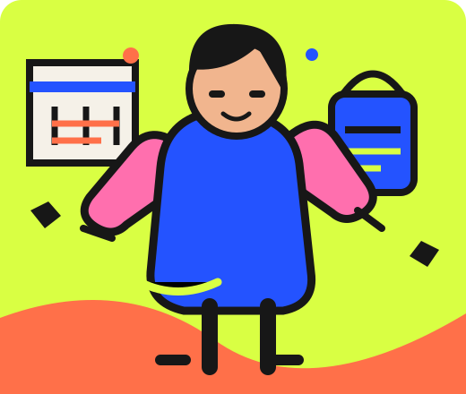

ОТВЕТЫ СДАЛИ ТЕБЯ БЕЗ АДВОКАТА
НЕ ПСИХОДИАГНОСТИКА / ЗАТО УЗНАВАЕМО
МАТЬ,
ТЫ КТО
ВООБЩЕ?
16 вопросов, 8 типов материнства и один большой семейный пиздец.
БЕЗ РЕГИСТРАЦИИ
С МАТОМ. ДЕТЕЙ НЕ РУГАЕМ.
С МАТОМ. ДЕТЕЙ НЕ РУГАЕМ.
ГЛАВНАЯ
ПО ХАОСУ
✳ СМЕНА 24/7
ПО ХАОСУ
✳ СМЕНА 24/7
 КАЛЕНДАРЬ СНОВА САМ СЕБЯ НЕ ЗАПОЛНИЛ
№ 01
КАЛЕНДАРЬ СНОВА САМ СЕБЯ НЕ ЗАПОЛНИЛ
№ 01
ЛЮБИШЬ СЕМЬЮ — НЕ ОБЯЗАНА ЛЮБИТЬ КАЖДУЮ ПЕРЕПИСКУПРОКРУТИ ↓
КРАТКАЯ ИНСТРУКЦИЯ ПО ВЫЖИВАНИЮ
НЕ ХОРОШАЯ.
НЕ ПЛОХАЯ.
ПРОСТО МАТЬ.
Выбирай первую настоящую реакцию, а не ответ для родительского собрания. Это сатирический тест, не диагноз и не аттестация на мать года. Мат есть, детей не обвиняем.
МАТЬ
НЕ
БОТ
НЕ
БОТ
ШАГ 01 / 02ВОЗРАСТЫ — ДЛЯ СЦЕН, ЗНАК — ДЛЯ ШУТКИ
МИНИ-АНКЕТА. ОБЕЩАЕМ, ПОСЛЕДНЯЯ.
ДВА ДЕЛА.
ОДИН ЭКРАН.
Возраст каждого ребёнка настроит сцены. Твоя дата рождения добавит шуточный солнечный знак. Потом — 16 ситуаций без вступления на три страницы.
Дата и возраст используются только в этой вкладке и не сохраняются.
ДОМАШНЯЯ ДОЛЖНОСТЬ / 01 / 16
01
СЕМЕЙНАЯ СИТУАЦИЯ
Не идеальную реакцию. Свою обычную.

СЕМЕЙНЫЙ ПАТТЕРН / НЕ ДИАГНОЗ
ТВОЯ ДОМАШНЯЯ ДОЛЖНОСТЬ
ВОТ ТАК ?
ТВОЙ ПЕРСОНАЛЬНЫЙ РАЗНОС
ДОМАШНИЕ ВВОДНЫЕ. ДА, МЫ ЗАМЕТИЛИ
ТРИ СУПЕРСПОСОБНОСТИ. БЕЗ ДОПЛАТЫ, КОНЕЧНО.
ТРИ СЛАБОСТИ. ТЕХНИЧЕСКИ — «ОСОБЕННОСТИ».
ПЯТЬ СЕРИЙ ИЗ ТВОЕГО ДОМАШНЕГО СИТКОМА
ЗНАКОМО?
ЕЩЁ БЫ.
ТРИ ПОЛЕЗНЫХ СОВЕТА. БЕЗ ТЕРАПЕВТИЧЕСКОГО ДЖАЗА.
СОЛНЕЧНЫЙ ЗНАК × ТВОЙ МАТЕРИНСКИЙ ТИП
Солнечный знак рассчитан по дате; время и место рождения не используются.
Развлекательный тест, не диагноз и не линейка качества материнства.